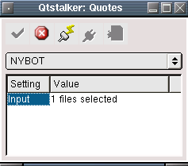

EOD futures quotes from the New York Board of Trade. As of now, they
use dynamic html to serve quotes, which makes it very difficult to get
in an automated manner. So you must download the data manually using a
browser and then use this plugin to read the ASCII file. This plugin
can read the format of the ASCII file only. You can get quotes from
http://www.nybot.com/dmrs/download/downloadAllSelection.asp?commodityType=future
